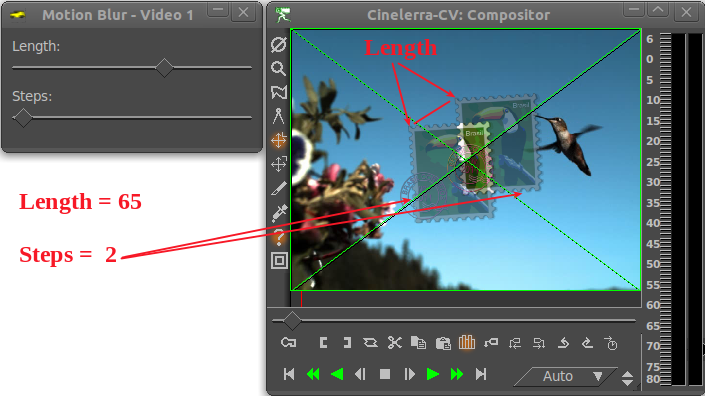
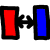

para pararlo antes de que llegue a la
etapa de mezclas y que devuelva el documento original, un botón que aparece junto
a cada pista para la que no deseamos enviar a su contenido a la salida.
para pararlo antes de que llegue a la
etapa de mezclas y que devuelva el documento original, un botón que aparece junto
a cada pista para la que no deseamos enviar a su contenido a la salida.
| [ << ] | [ >> ] | [Top] | [Contents] | [Index] | [ ? ] |
Se muestran apilados bajo la pista a la que se aplican. Aplican un tratamiento adicional a la pista cuando ésta se lee (para reproducirla en el compositor), del cual no se almacena el resultado en ningún sitio. Cada vez que se reproduce la pista en el compositor, vuelve a calcularse el resultado de aplicar el efecto, y se muestra por la pantalla. El único momento en que sí se almacena el resultado de aplicar el efecto a la pista es, lógicamente, al renderizar el proyecto.
Todos los efectos en tiempo real se listan en la ventana de recursos, divididos en dos grupos: efectos de audio y efectos de vídeo. Los efectos de audio deben arrastrarse desde la ventana de Recursos a pistas de audio. Los efectos de vídeo deben arrastrarse a pistas de vídeo.
Si hay datos en la pista de destino, el efecto se aplica sobre la pista entera. Si no hay datos en la pista, el efecto se borra inmediatamente. Por último, si hay una región de la pista seleccionada, el efecto se pega en dicha región, sin importar si hay datos o no.
Algunos de los efectos no procesan datos, sino que los sintetizan. En el caso de los efectos de síntesis, es deseable seleccionar una región de la pista de manera que al arrastrarlos se peguen sin borrar dicha sección.
Al arrastrar más de un efecto sobre una pista, verá que los efectos se apilan de arriba hacia abajo, al pie de la pista en cuestión. Al reproducir la pista, los efectos se procesan de arriba hacia abajo. La salida del efecto que está más elevado proporciona la entrada al efecto justo por debajo, y la salida de éste a su vez sirve como entrada al que esté justo debajo, etc...
Además de arrastrándolos desde la ventana de Recursos, los efectos se pueden aplicar a una pista mediante un menú contextual. Pulse con el botón derecho del ratón en una pista y seleccione Adjuntar efecto... en el menú que aparecerá. El diálogo para añadir efectos ofrece más control que el sencillo procedimiento de arrastrar y soltar. Esto se debe a que el diálogo para añadir efecto permite añadir dos o más tipos de efecto: efectos compartidos y pistas compartidas. Puede escoger un plugin de la columna Plugins y pulsar el botón Añadir justo debajo de dicha columna (un botón grande y verde). El resultado es el mismo que si hubiera arrastrado el plugin desde la ventana de Recursos.
Los efectos añadidos a las pistas a menudo requieren configuración. Puede ajustar diferentes valores relativos al efecto pulsando con el botón derecho del ratón sobre el mismo. En el menú que aparece hay una opción, Mostrar, que hace aparecer un diálogo con los ajustes aplicables al efecto. La mayoría de los efectos poseen un diálogo así, aunque algunos no. Si no hay ajustes aplicables al efecto, no aparece nada al pulsar sobre el menú Mostrar. Los ajustes que se hagan en el diálogo del efecto suelen afectar a toda la duración del mismo.
Los otros dos tipos de efectos que ofrece el diálogo Adjuntar Efecto son efectos reciclados. Para usar un efecto reciclado, se deben satisfacer tres requisitos:
En el caso de un efecto compartido, estas condiciones deben satisfacerse. En el caso de una pista compartida, basta con que haya otra pista en la línea de tiempos del mismo tipo que la pista a la que se le está aplicando el efecto. Si abrió el diálogo Adjuntar Efecto pulsando con el botón derecho del ratón sobre una pista de vídeo, no habrá nada en la columan Pistas compartidas si no existe otra pista de vídeo en la línea de tiempos. Si pulsó con el botón derecho del ratón sobre una pista de audio, no habrá nada en la columna Pistas Compartidas si no existe otra pista de audio.
Si hay efectos compartidos o pistas compartidas disponibles, aparecerán en las columnas Efectos compartidos y Pistas compartidas. El botón Añadir del diálogo (esquina inferior izquierda) sirve para añadir los efectos o pistas seleccionados a la pista actual.
Los efectos compartidos y las pistas compartidas permiten hacer cosas únicas. Un efecto compartido se trata como una copia del efecto original, salvo que no se puede acceder a la interfaz de usuario del efecto compartido. Es decir, toda la configuración y ajustes del efecto compartido se determinan en el diálogo del efecto original, y sólo ese diálogo se puede abrir.
Cuando se reproduce un efecto compartido, se procesa igual que cualquier efecto normal, salvo por el hecho de que la configuración se copia del efecto original. Algunos efectos pueden detectar que están siendo compartidos, como los efectos de reverberación y el compresor. Estos efectos pueden descubrir qué pistas los están compartiendo y mezclar ambas pistas juntas o usar una de ellas para alojar valores. El efecto de reverberación mezcla ambas pistas juntas para simular sonido ambiente. El compresor usa una de las pistas compartidas como disparador.
Cuando una pista original tiene una pista compartida como efecto, la pista compartida es en sí misma un efecto de tiempo real. Estas pistas suelen llamarse "pistas fundidas", pero en Cinelerra ese resultado se consigue añadiendo pistas compartidas. La atenuación y otros efectos que tenga la pista compartida se aplican también a la pista original. Una vez la pista compartida ha procesado los datos, la pista original calcula los efectos que están por debajo de la pista compartida y los compone en la salida final.
Además, una vez que la pista compartida ha procesado la salida de la pista
original como si fuera un efecto en tiempo real, la pista compartida se mezcla
a sí misma en la salida, con sus preferencias y ajustes (panorámica, modo y
proyector). Por lo tanto, hay dos pistas mezclando los mismos datos en la salida.
A menudo no se desea que la pista compartida envíe a la salida los mismos datos que
la pista original. Lo que se desea es que pare antes de la etapa de mezclas y envíe los
datos de vuelta a la pista original. Esto se puede hacer habilitando el botón Mudo
para pararlo antes de que llegue a la
etapa de mezclas y que devuelva el documento original, un botón que aparece junto
a cada pista para la que no deseamos enviar a su contenido a la salida.
Puede darse el caso de que, al producir vídeo, desee que una pista compartida actúe sobre los datos de la pista original en la salida unas segunda vez. Si se trata de vídeo, el vídeo de la pista compartida siempre aparecería bajo el vídeo de la pista original, independientemente de si estaba encima de la pista original. Esto se debe a que las pistas compartidas se componen (se calcula su efecto) en el orden en que han sido añadidas. Por ser parte de la pista original, tiene que componerse (calcularse su efecto) antes de componer la pista original.
Existen muchas operaciones que permiten manipular los efectos una vez que están en la línea de tiempos. Puesto que mezclar efectos y contenidos es una tarea tan compleja, los métodos que se usan en la edición de efectos no son tan sencillos como cortar y pegar. Parte de la edición consiste en arrastrar puntos de entrada y salida, parte se realiza mediante menús contextuales y parte se realiza arrastrando los propios efectos.
Normalmente, los efectos responden a las decisiones de edición. Por ejemplo, al cortar parte de una pista, los efectos asignados a dicha pista se encogen para no afectar a otras pistas. Al desplazar puntos de entrada o salida, los efectos modifican su longitud. Se puede deshabilitar este comportamiento en el menú Preferencias->Editar Efectos de la ventana del programa. Así se desacopla la edición de pistas y contenidos de la edición de efectos. Pero entonces, ¿cómo se editan únicamente los efectos?
Mueva el ratón sobre los extremos del efecto. Verá que cambia y adopta la forma de un icono de redimensionamiento a derecha o a izquierda. En este estado, arrastrando el final del efecto se redimensiona su tamaño de la misma manera que se hace con las pistas.
Los tres mecanismos para recortar pistas se aplican igualmente al recorte de los efectos y están igualmente ligados a los botones del ratón que se determinen en Preferencias->Preferencias...->Interfaz. See section Interfaz. Al recortar un efecto, se puede mover la frontera del efecto arrastrándola. A diferencia de la edición de pistas, el efecto no tiene duración original (no se está leyendo de ningún fichero fuente). Se puede extender el final de un efecto tanto como se desee, sin límites.
También a diferencia de la edición de pistas, la posición inicial desde la que se empieza a arrastrar no afecta al contenido sobre el que se aplica el efecto. Es decir, las decisiones que tomemos sobre el efecto no afectan al contenido (vídeo o audio) al que el efecto está ligado. El resto de efectos apilados, sin embargo, sí siguen las decisiones de edición que apliquemos sobre un efecto. Al arrastrar el final de un efecto que está alineado con efectos en otras pistas, los efectos en dichas pistas se verán afectados (pero no los contenidos de dichas pistas, como acabamos de indicar).
Es posible recortar el final de un efecto, dejando una gran cantidad de tiempo sin afectar cerca del final de la pista. Si entonces arrastra un nuevo efecto sobre la misma pista, puede posicionarlo en la porción de la misma que no cubre el anterior efecto. Los efectos de tiempo real se apilan en filas bajo la pista. Cada fila puede contener varios efectos adyacentes, es decir, en posiciones sucesivas en el tiempo.
En algunos casos, deseará recortar un efecto, trabajando sólo sobre una de las filas apiladas, no sobre el resto. La forma de conseguir esto es posicionar primero el punto de inserción al principio o final del efecto en cuestión, y realizar el recorte manteniendo pulsada la tecla MAY. De esta manera, sólo se verá afectada una fila de efectos.
Además de recortar, también puede mover los efectos arriba o abajo en la pila de efectos. Cada pista tiene su propia pila de efectos al pie de la misma. Al mover un efecto arriba o abajo en dicha pila, se cambia el orden en que dichos efectos son procesados y afectan al contenido de la pista. Para mover un efecto, pulse con el botón derecho del ratón sobre el efecto y seleccione Mover hacia arriba o Mover hacia abajo en el menú contextual que aparecerá.
Al mover efectos arriba o abajo hay que tener en cuenta que, si se trata de efectos compartidos, sus referencias estarán apuntando a efectos diferentes tras moverlos.
Finalmente, los efectos se pueden arrastrar, lo que tiene el mismo efecto que arrastrar fragmentos de películas o clips. Se debe seleccionar la flecha para activar el modo de arrastrar y soltar para poder arrastrar un efecto. Los efectos tienden a pegarse a los límites de las pistas, los clips o las fronteras de otros efectos. Tenga en cuenta que tras arrastrar una referencia a un efecto compartido la referencia apuntará a un efecto diferente.
Pulse con el botón derecho del ratón para hacer aparecer el menú del efecto. Escoja Adjuntar... para cambiar el efecto o cambiar la referencia si se trata de un efecto compartido.

A diferencia de la compresión que se suele realizar en un computador, la compresión de audio no reduce la cantidad de datos que es necesario guardar en el archivo de audio. El compresor de audio reduce el rango dinámico del audio. En Cinelerra, el compresor en realidad realiza dos funciones: compresión y expansión.
El compresor calcula el nivel máximo de sonido en un perído de tiempo determinado, a partir de la posición actual. El nivel máximo de sonido se toma como nivel de sonido de entrada. Para cada nivel de sonido que entra, hay un nivel de sonido de salida que el usuario especifica. La ganancia en la posición actual se ajusta para que el máximo nivel de sonido en el intervalo de tiempo sea el valor especificado por el usuario.
La compresión se define mediante un gráfico que relaciona cada nivel de sonido de entrada con un nivel de salida. El eje horizontal representa el nivel de entrada de sonido en dB. El eje vertical representa el nivel de sonido de salida en dB. El usuario define los niveles de salida del sonido al crear puntos en este gráfico. Para crear un punto, basta con pulsar con el ratón sobre el gráfico. Si ya existen dos o más puntos, se puede eliminar un punto arrastrándolo sobre otro. Para permitir mayor precisión en el posicionamiento de los puntos, los valores del último punto que se haya escogido aparecen en unos cuadros de texto al pie del gráfico.
Para que el compresor reduzca el rango dinámico del audio, todos los valores de salida deben ser mayores que los de entrada (salvo 0 dB). Para que expanda el rango dinámico del audio, todos los valores de salida deben ser menores que los de entrada, salvo 0 dB. El algoritmo reduce todos los niveles de sonido por encima de 0 dB a 0dB, así que si se desea conseguir esta sobrecarga habrá que añadir un efecto de ganancia antes de la entrada al compresor, que reduzca todos los niveles por igual, y luego añadir otro efecto de ganancia a la salida para volver a amplificar todos los niveles por encima de 0 dB.
Segundos de reacción: Determina dónde se mide el máximo nivel de sonido, respecto a la posición actual, y cuán rápido se ajusta la ganancia para alcanzar ese pico. Se mide en segundos. Si es negativo el compresor mide hacia delante en el tiempo respecto a la posición actual, para encontrar un pico que está en el futuro. La ganancia se eleva progresivamente durante un tiempo de reacción para alcanzar ese pico. Así se puede alcanzar el nivel de salida deseada exactamente cuando el pico de entrada ocurre en la posición actual.
Si el tiempo de reacción es positivo el compresor sólo considera la ganancia en la posición actual, y eleva la ganancia durante un tiempo de reacción para alcanzar el nivel de salida deseado. Alcanza el nivel de salida deseado exactamente un tiempo de reacción después de haber detectado el pico de entrada.
Segundos de atenuación: Si el pico es mayor que el nivel actual, el compresor eleva la ganancia hasta el valor de pico. Si a continuación un pico futuro es menor que el pico actual, disminuye la ganancia progresivamente. El tiempo necesario para disminuir la ganancia puede ser mayor que el tiempo necesario para subirla. El tiempo de bajada es el tiempo de atenuación en segundos.
Tipo de disparador: El compresor es un efecto multi-canal. Varias pistas pueden compartir un compresor. La manera en que se interpreta la señal que llega de varias pistas depende del tipo de disparador.
El tipo de disparador usa el valor suministrado en el cuadro de texto Disparador como identificador de la pista que va a usar como entrada al compresor. Esto permite que una pista, incluso una que ni siquiera se oiga, determine la sonoridad de las demás pistas.
El disparador de tipo Máximo toma la pista más sonora (la de mayor amplitud) como entrada para el compresor.
El disparador de tipo Total añade las señales de todas las pistas y usa el total como entrada al compresor. Ésta es al compresión de sonido más natural, y resulta ideal cuando promedian varias pistas en un único altavoz.
Disparador: El compresor es un efecto multicanal. Varias pistas pueden compartir un mismo compresor. Normalmente sólo se observa una pista para encontrar el pico de entrada. Ésta pista es la que se especifica con el Disparador. Compartiendo varias pistas y jugando con el valor del disparador se puede hacer que una onda senoidal sobre una pista siga a la amplitud de un tambor en otra pista, por ejemplo.
Únicamente suavizar: Para visualizar lo que el compresor está haciendo al nivel de sonido, esta opción le hace reemplazar la onda de sonido por el valor de pico actual únicamente. De esta manera resulta muy sencillo ver cómo los segundos de reacción afectan a los valores de pico detectados.

Permite indicar un número de segundos para retrasar la pista de vídeo.

Escríbame.

Escríbame.

Escríbame.

Escríbame.

Escríbame.

Escríbame.
Escríbame.

Escríbame.

Escríbame.

Este efecto lee el audio directamente de la entrada de la tarjeta de sonido. Reemplaza cualquier audio en la pista, así que normalmente se aplica sobre una pista vacía.
Para usar Live Audio, seleccione una región horizontal de una pista de audio o defina puntos de entrada y salida. A continuación arrastre el efecto Live Audio a dicho área. Puede crear pistas adicionales y anadir copias compartidas del primer efecto Live Audio a las otras pistas para grabar canales adicionales en ellas.
Live Audio usa el driver de sonido indicado en Preferencias->Preferencias...->Playback->Salida de Audio para grabar, pero a diferencia de la grabación, usa el tamaño de buffer especificado en playback buffer size como tamaño de buffer de grabación y usa el project sample rate como tasa de muestreo.
Estos ajustes son críticos, puesto que algunos drivers de sonido non pueden grabar en el mismo buffer en el que reproducen. Live Audio suele ser más fiable cuando ALSA es el driver de grabación y el tamaño de buffer de reproducción es 2048.
Puede disponer otros efectos tras Live Audio para procesar la entrada de la tarjeta de sonido en tiempo real.
Ahora las malas noticias. Con Live Audio no hay lectura anticipada, así que los efectos como el compresor que se apliquen provocarán un retraso (si tienen lectura anticipada habilitada) o una peor calidad en la reproducción.
Otro problema es que a veces el reloj de la grabación en la tarjeta de sonido es ligeramente más lento que el reloj de reproducción. La grabación tarde o temprano se queda atrás y la reproducción suena a trompicones.
Aclarar, finalmente, que el efecto Live Audio no funciona hacia atrás.

Escríbame.

Escríbame.

Igual que hay efectos de desplazamiento en el tiempo, también hay otros de desplazamiento en la altura (agudo o grave): Desplazamiento de la altura ("pitch shift"), Nuevo muestreo ("resample") y Diálogo de información de recurso ("asset info dialog"). La altura de un sonido es su calidad de agudo ("alto") o grave ("bajo"). La altura de un sonido es una medida de la percepción humana de la frecuencia de la onda, por lo que no se debe confundir con la amplitud de la onda (volumen del ruido). El desplazamiento de la altura es un efecto de tiempo real que se puede arrastrar y soltar en pistas de audio grabables. El desplazamiento de la altura usa una transformada rápida de Fourier para intentar cambiar la altura sin cambiar la duración, pero esto introduce artefactos sonoros "de ventana" (también llamados aberraciones o defectos).
Los artefactos sonoros son menos obtrusivos en las pistas de audio que han sido claramente desplazadas en la altura. El desplazamiento de altura resulta útil, por lo tanto, para realizar cambios muy extremos de altura. Si se desean cambios suaves o que el espectador apenas perciba, es preferible usar un efecto de Nuevo muestreo ("Resample") en el menú Audio->Renderizar efecto...->Seleccionar un efecto. El nuevo muestreo puede cambiar la altura hasta un 5% sin cambios perceptibles de duración.
Otra forma de cambiar ligeramente la altura es ir a la ventana de Recursos, seleccionar la carpeta Media, pulsar con el botón derecho del ratón en un fichero de audio y escoger Info. Se muestra un diálogo de información en el que se puede ajustar la tasa de muestreo para ajustar la altura. Este método también requiere pinchar sobre la frontera derecha de las pistas de audio y arrastrar a izquierda o derecha para adecuarse a los cambios de longitud.

El efecto Voltear audio, aplicado a una pista, sirve para reproducirle hacia atrás. El sonido se reproduce hacia delante.
Obsérvese que al voltear audio, la forma de onda en la línea de tiempos no refleja el estado real de la salida invertida.

Escríbame.

Escríbame.

Escríbame.

Escríbame.

La mayoría de las emisiones televisivas se reciben con resolución de 1920 x 1080, pero se originan en una fuente 720 x 480 en el estudio. Es una pérdida de espacio comprimir los 1920 x 1080 píxeles si los detalles realmente tienen una resolución máxima de 720 x 480. Por desgracia, redimensionar vídeo de 1920 x 1080 a 720 x 480 no es tan sencillo como simplemente encogerlo.
En la estación de TV el metraje original a 720 x 480 primero se convierte en campos de 720 x 240. Cada campo se escala entonces a 1920 x 540. Los dos campos de 1920 x 540 se combinan mediante el entrelazado para formar una imagen a 1920 x 1080. Esta técnica permite que una TV doméstica proporcione la imagen remuestreada sin circuitería adicional que maneje el entrelazado a 720 x 480 en una imagen a 1920 x 1080.
Si se limita a desentralazar las imágenes a 1920 x 1080, acabaría con resoluciones de 720 x 240. El efecto 1080 a 480, en cambio, extrae correctamente dos campos de tamaño 1920 x 540 de la imagen, los redimensiona por separado y los combina de nuevo para recuperar una imagen a 1920 x 480 entrelazada. El efecto Escalar puede aplicarse a esta nueva imagen para reducir el tamaño horizontal a 960 o 720, dependiendo de la relación de aspecto original.
Las pistas a las que se les aplica el efecto 1080 to 480 deben tener una resolución de 1920 x 1080. Las preferencias del proyecto en el menú Preferencias->Formato deberían indicar, al menos, una resolución de 720 x 480.
El efecto no sabe si la primera fila de la imagen a 1920 x 1080 pertenece a la primera fila del original a 720 x 480. Debe especificar cuál es la primera fila en la configuración del efecto.
La salida de este efecto es una imagen pequeña en el medio del fotograma original a 1920 x 1080. Use el proyector para centrar la imagen de salida durante la reproducción.
Por último, cuando tenga vídeo entrelazado a 720 x 480 puede aplicar los efectos Fotogramas a campos o Telecine inverso para recuperar los fotogramas progresivos originales.

Este efecto sirve para conseguir aspecto de película vieja en cines antiguos, o de espectáculo televisivo de hace muchos años. Añade líneas en movimiento hacia arriba y hacia abajo en la imagen, además de añadir "nieve" al vídeo. Se puede usar junto con los efectos de Brillo/Contraste y Balance de Color para hacer que la película realmente parezca una antigua película en blanco y negro.

Este efecto desenfoca una pista de vídeo. Los parámetros son:

Sirve para iluminar una grabación oscura o añadir luz. No se debe abusar de este efecto por el riesgo de degradar la calidad del vídeo. El efecto puede usarse junto con fotogramas clave para dar brillo a una grabación larga que ha quedado oscura al principio pero brillante al final. Normalmente se modifican el brillo y el contraste en cantidades parecidas (por ejemplo, oscuridad 28 contraste 26) para conservar intactos los colores originales.

El efecto de película quemada hace que el vídeo aparezca estropeado (quemado) en las pequeñas regiones coloreadas de la película, como por ejemplo en el contorno de una camiseta blanca. Puede ser un recurso muy útil en un vídeo musical o un gran recurso para dejar volar la imaginación en un vídeo.

Este efecto borra los píxeles que encajan con el color deseado. Este color se llama "la clave chroma". Los píxeles se reemplazan con negro si no hay canal alfa, o con transparencia cuando sí lo hay. El modelo de color que se haya escogido es decisivo, por lo tanto, para determinar el comportamiento del efecto.
La clave chroma puede usar la intensidad de luz o el tinte para determinar lo que se desea borrar. Use value permite usar sólo el valor de intensidad de luz para determinar lo que se va a borrar. Se elige el color central que se va a borrar usando el botón Color. Alternativamente, se puede escoger un color directamente en el fotograma mostrado en el compositor usando primero la herramienta selector de color en la ventana del compositor, para escoger un color, y pulsando luego el botón Usar selector de color. Así se ajusta el color de clave chroma a la selección actual de la herramienta de selección de color del compositor.
Obsérvese que la salida del efecto chroma key se realimenta al compositor, así que si usa la herramienta de selección de color sobre una película a la que se ha aplicado una clave chroma (u otros efectos) el color escogido se referirá a la imagen modificada. Es decir, si aplica una clave chroma y el resultado no le parece satisfactorio deberá deshabilitar el efecto de clave chroma para poder realizar una nueva selección de color más adecuada, y sólo entonces podrá volver a habilitar la clave chroma.
Si la iluminación o el tinte de un píxel cualquiera están dentro de un Threshold umbral determinado, dicho píxel será borrado. Al aumentar este umbral aumenta el número de colores afectados y por tanto de píxeles afectados. No es, sin embargo, una simple operación todo/nada. A medida que un color se acerca al valor del umbral, se borra gradualmente si el gradiente de color (Slope) en su entorno es elevado, pero se borra rápidamente si dicho gradiente es bajo. El gradiente de color, Slope en inglés, se define en este contexto como el número de valores adicionales cercanos al umbral necesarios para pasar de opaco a transparente.
El umbral suele ser muy bajo cuando el gradiente es muy alto. Ambos parámetros tienden a ser exclusivos porque el gradiente rellena el umbral adicional.
El gradiente intenta suavizar los contornos de la clave chroma, pero no funciona bien con fuentes comprimidas. Una técnica popular para suavizar los contornos de la clave chroma es usar gradiente máximo y encadenar un efecto de Difuminado bajo el efecto de clave chroma, que difumine únicamente el alfa.

Escríbame.

El balance de color para vídeo es un efecto que da muy buenos resultados cuando se usa con Brillo/Contraste y Tinte/Saturación para intentar compensar posibles errores de grabación como iluminación baja o similares. Sin embargo, no es mucho lo que puede hacer sin degradar rápidamente la calidad del vídeo. Funciona igual que el efecto de balance de color en un programa de edición de imágenes como El Gimp. Con este efecto se pueden cambiar los colores que se envían a la salida CMY (Cyan, Magenta y Amarillo) o RGB (Rojo, Verde y Azul).

Este efecto descarta los fotogramas que son parecidos entre sí, en una pista, para reducir la tasa de fotogramas. Normalmente se aplica al DVD, para convertir el vídeo a 29.97 fotogramas por segundo en vídeo a 23.97 fotogramas por segundo. El algoritmo, sin embargo, es general y acepta cualquier tasa de fotogramas como entrada y la convierte en una tasa menor de salida.
La tasa de salida del efecto Diezmar (Decimate) es la tasa de fotogramas escogida para el proyecto. La tasa de entrada se fija en el diálogo del efecto. Para convertir vídeo progresivo de 29.97 fps (fotogramas por segundo) a película a 23.97 fps, se debe aplicar un efecto Diezmar a la película, escogiendo 29.97 fotogramas de entrada por segundo y 23.97 como tasa de fotogramas para el proyecto.
Tenga en cuenta que cada efecto dispuesto antes de la entrada al efecto Diezmar procesa el vídeo a la tasa de fotogramas de entrada, y cada efecto tras Diezmar procesa el vídeo a una tasa menor. Los efectos que requieren mucha potencia de cálculo deberían ponerse a la salida de Diezmar, para facilitar el procesamiento y aliviar el uso de CPU.

El efecto de desentrelazado ha evolucionado a lo largo de los años, hasta ser mucho más que simple desentrelazado. De hecho, dos de los métodos de desentrelazado, Telecine inverso y Campos a fotogramas, son efectos separados. El efecto de desentrelazado ofrece bastantes variaciones de replicación de línea para eliminar los artefactos (defectos) con forma de peine del vídeo entrelazado. También ofrece herramientas de permutación de líneas para arreglar vídeo capturado incorrectamente, o conseguir que la salida del efecto Invertir Video muestre los campos en el orden correcto.

Escríbame.

Escríbame.

Escríbame.

La "Difference Key" o clave de diferencias sirve para crear transparencia en regiones parecidas entre dos fotogramas. Este efecto debe aplicarse en dos pistas. Una pista contiene la acción delante de un fondo constante y la otra contiene el fondo sin nada delante (por ejemplo, una foto fija del fondo sin actores ni acción de ningún tipo). Aplique la clave de diferencias a la pista que contiene la acción y aplique una copia compartida del efecto a la pista con el fondo fijo. La pista con el fondo debería estar muda (esto se hace en el área de control de la pista, a la izquierda de la misma) y por debajo de la pista con la acción en la línea de tiempos. Además, el modelo de color debe tener un canal alfa para que esta técnica funcione.
Los píxeles que son distintos en el fondo y la pista con la acción se tratan como opacos. Los píxeles que son parecidos se tratan como transparentes. Puede cambiar el umbral o Threshold en el diálogo del efecto Difference Key para hacer que más píxeles que no son del mismo color se vuelvan transparentes. También puede cambiar el gradiente o Slope para modificar la velocidad a la que la transparencia decae a medida que los píxeles son más diferentes.
Aquí el gradiente o "slope" se define como el número de valores adicionales alrededor del umbral que se necesitan para pasar de opaco a transparente. Un gradiente alto es más útil con el umbral bajo, porque el gradiente rellena umbral adicional.
Usar valor sirve para comparar la intensidad de iluminación de los píxeles en lugar de su color.
La aplicación de un difuminado al canal alfa de la pista superior puede suavizar el contorno de la región transparente.
Nota: A fecha de hoy es frecuente que este efecto provoque errores (finalización repentina del programa, por ejemplo) si se está usando algún modelo de color YUV.

Otro efecto ofrecido por Kentaro (effectTV).

Downsampling es una palabra inglesa que significa "volver a muestrear pero con menos pasos", es decir, tomando menos muestras. Este efecto, por lo tanto, sirve para reducir el tamaño de una imagen (la cantidad de memoria necesaria para almacenarla) a costa de perder datos, reduciendo la tasa de muestreo.
Los parámetros son:
Horizontal
Horizontal offset
Vertical
Vertical offset
Canales

Este efecto lee los fotogramas al doble de la tasa de fotogramas del proyecto, combinando 2 fotogramas de entrada en un fotograma de salida entrelazado. Los efectos previos a campos a fotogramas procesan los fotogramas a velocidad doble a la tasa de fotogramas del proyecto. Cada fotograma de entrada es lo que se llama un "campo".
El efecto campos a fotogramas necesita saber qué campo corresponde a qué líneas en el fotograma de salida. Si los campos de entrada son el resultado de un proceso que duplica las líneas, como el efecto fotogramas a campos, equivocarse en este ajuste provoca una salida borrosa. Si los campos de entrada son el resultado de un proceso estándar de conversión como el efecto 1080 a 480, equivocarse en el ajuste del efecto no supone ninguna diferencia.
El "debobber" (efecto) que convierte vídeo entrelazado a 720x480 en vídeo entrelazado a 1920x1080 o en vídeo progresivo a 1280x720 degrada la resolución vertical hasta el punto de que se vuelve irrecuperable.

Este efecto permite obtener la imagen especular de una pista de vídeo (o porción de la misma), de izquierda a derecha, de derecha a izquierda, de arriba hacia abajo o de abajo hacia arriba.
La ventana de diálogo es sencilla, sólo se necesitan los parámetros vertical y horizontal.

Escríbame.
La forma más sencilla de usarlo es seleccionar una región de la pista que se desee congelar, arrastrar y soltar el efecto sobre dicha región y la región entera se sustituirá con el fotograma de numeración más baja que haya en el área afectada.
Este efecto tiene una opción especial, Permitido, que se puede usar con fotogramas clave. Las regiones afectadas por un efecto Congelar Fotograma con la opción Permitido activada repiten el fotograma con la numeración más baja desde el último fotograma clave. Este comportamiento ofrece posibilidades únicas. Freezeframe has an enabled option which can be keyframed. Regions of a freeze frame effect which are enabled repeat the lowest numbered frame since the last keyframe. This has unique possibilities.

Las imágenes originales de una cámara se almacenan en formato RAW, en una escala logarítmica. Los negros en estas imágenes valen casi 0, y los blancos se supone que valen infinito. La tarjeta gráfica y la mayoría de los códecs de vídeo almacenan los colores con una escala linal, pero Cinelerra mantiene las imágenes originales RAW de las cámaras en su escala logarítmica al renderizarlas. Es necesario hacerlo así, ya que el intérprete de imágenes RAW no siempre puede decodificar los valores gamma adecuados de las imágenes. Además, hace su procesamiento en enteros de 16 bits, lo que hace perder mucha información.
El efecto gamma convierte los colores logarítmicos en colores lineales mediante un valor gamma y un valor máximo. El valor gamma determina cuán aguda es la curva de salida, y el valor máximo es donde 1.0 en la salida corresponde al máximo brillo en la entrada.
El efecto gamma tiene dos parámetros más para simplificar la corrección de gamma. La opción Automático hace que calcule el Máximo a partir del histograma de la imagen, sin que sea necesario indicarle al efecto cuál es el máximo. Esta opción es muy útil al previsualizar una larga lista de imágenes, ya que cambia para cada imagen.
La opción Usar selector de color usa el valor que haya almacenado en el momento de pulsar el botón en la herramienta de selección de color del compositor, para fijar el valor Máximo. Es necesario pulsar el botón Usar selector de color cada vez que se use la herramienta de selección de color del compositor para escoger un nuevo color.

Escríbame.
Difuminado lineal

Muestra el número de veces que aparece cada color. Para ello usa un gráfico conocido como histograma.
Siempre se hace en RGB en coma flotante, independientemente del espacio de color del proyecto. El histograma tiene dos conjuntos de parámetros: los de entrada y los de salida.
En el visor de histogramas puede haber cuatro histogramas. Los histogramas rojo, verde y azul muestran los histogramas de entrada para los canales rojo, verde y azul y los multiplican por una función de transferencia para obtener la salida de los canales rojo, verde y azul. A continuación el rojo, verde y azul se escalan según una nueva función de transferencia a la salida. Se calcula el valor correspondiente al rojo, verde y azul así obtenidos, y se representa en el histograma de valor. El histograma de valor cambia, por lo tanto, dependiendo de la configuración de los canales rojo, verde y azul. También se pueden definir funciones de transferencia de entrada y salida para el valor, que son funciones que se aplican por igual a los canales rojo, verde y azul tras aplicar sus funciones de transferencias específicas.
Puede escoger la función de transferencia que desea visualizar escogiendo uno de los canales que se muestran encima del histograma.
La función de transferencia de la entrada se define mediante un grafo superpuesto al histograma. El eje horizontal muestra cada color de entrada posible. El eje vertical corresponde al color de salida para cada color de entrada. El vídeo que entra en el efecto Histograma primero se representa en el histograma y luego se procesa, de manera que los valores de los colores de salida sean iguales a los valores de salida correspondientes a cada valor sobre el gráfico de entrada.
El gráfico de entrada se edita añadiendo y eliminando cualquier número de puntos. Arrastre con el ratón en cualquier punto del gráfico de entrada para crear un punto y moverlo. El punto activo se puede distinguir de los demás porque se dibuja con el relleno opaco (el resto de puntos se dibujan con el relleno transparente). Los colores de entrada y salida del punto activo se muestran en cuadros de texto encima de la ventana. Se pueden usar estos cuadros de texto para cambiar sus valores.
Se puede borrar los puntos seleccionando un punto y arrastrándolo hasta hacerlo coincidir con otro punto adyacente. También se puede borrar un punto seleccionándolo y pulsando el botón Borrar.
Tras ser procesada por la función de transferencia de entrada, la imagen se ve afectada por la función de transferencia de salida. Esta función es simplemente un máximo y un mínimo que permitan escalar los colores de entrada. Los valores de entrada al 100% se reducen al valor máximo para la salida. Los valores de entrada del 0% se escalan hasta el mínimo para la salida.
Los valores de entrada por debajo de 0 siempre se agrupan en 0%, y los valores de entrada superiores al 100% siempre se agolpan en el 100%. Arrastre los triángulos del gradiente de salida para modificarlo. También tiene cuadros de texto en los que se pueden introducir los valores.
Active el botón Automático para permitir que el histograma decida una función de transferencia de entrada de manera automática para el rojo, el azul y el verde, pero no para el valor. Esta función la calcula escalando el 99% medio de los píxeles de manera que ocupen el 100% del ancho del histograma. El número de píxeles a los que se permite pasar se fija mediante el cuadro de texto Treshold o umbral. Un umbral de 0.99 escala la entrada de manera que deja pasar al 99% de los píxeles. Umbrales más pequeños permiten pasar a menos píxeles y producen una salida con más contraste.
Se calcula una función de transferencia de manera automática para los canales rojo,
verde y azul, pero no para el valor.
Plot histogram
Split output

Otro efecto de Kentarou effectTV.

Con este efecto se puede cambiar el tinte, la saturación y el valor. Los parámetros se modifican usando únicamente 3 controles deslizantes.

Escríbame.

El efecto de interpolación de píxeles intenta crear la ilusión de una tasa de fotogramas mayor a partir de metraje fuente o de vídeo con tasas de fotogramas muy bajas, calculando la media de varios fotogramas a lo largo del tiempo. Calcula la media de dos fotogramas de entrada por cada fotograma de salida. Los fotogramas de entrada corresponden a diferentes instantes, lo que produce un fundido de todos los fotogramas de salida entre fotogramas de entrada. Se puede especificar una tasa de fotogramas de entrada menor que la tasa de fotogramas del proyecto. Esto hace que se tomen los fotogramas de entrada a intervalos regulares.
También puede especificar la posición de fotogramas clave como las posiciones de los fotogramas de entrada. En este modo, la tasa de fotogramas de la salida se usa también como tasa de fotogramas de entrada, y usted sólo tiene que crear fotogramas clave donde desee indicar la presencia de un fotograma de entrada.

Ésta es herramienta de desentrelazado más efectiva cuando el metraje es una
transferencia a vídeo de una película. En este caso la película ha tenido
que ser convertida de 24 fotogramas por segundo (fps) a 60 fps, y luego los
60 fps tuvieron que muestrearse nuevamente para reducirlos a 30 fps, mediante
la extracción de líneas pares e impares y entrelazando el resto. El efecto
de Telecine Inverso o IVTC es, fundamentalmente, una forma de convertir vídeo
entrelazado en vídeo progresivo. Deshace tres patrones de entrelazado.
A AB BC CD D
AB CD CD DE EF
Automático
Las dos primeras opciones son patrones fijos y se ven afectados por los parámetros Patrón offset, que es el offset o desplazamiento inicial que se aplica al patrón, y Odd field first (primero el campo impar). Esta segunda opción crea varias combinaciones de líneas para cada fotograma y escoge la combinación más progresiva. Es un algoritmo de fuerza bruta.
Esta técnica de telecine inverso no depende de un patrón, como otras técnicas, y es menos destructiva. En contra, provoca perturbaciones irregulares en los tiempos, debido a la falta de reducción de tasa de fotogramas. Para mejorar la temporización, es necesario disponer un efecto Diezmar (Decimate) a continuación del efecto Telecine Inverso.

Invierte los colores presentes en una pista de vídeo. Se puede invertir cada uno de los canales rojo, azul, verde y/o alfa.

El difuminado o desenfoque se puede hacer de tres formas: lineal, radial o mediante zoom.
Los parámetros se refieren a:

Este efecto lee el vídeo directamente desde la entrada para captura de la tarjeta de vídeo. Reemplaza cualquier vídeo previo en la pista, así que normalmente se usa sobre una pista vacía. Se utiliza la configuración de la tarjeta de captura de vídeo que haya en las preferencias de grabación, por lo que para configurar la tarjeta de captura es necesario usar el menú Preferencias->Preferencias...->Grabación.
Vaya a la sección Entrada de vídeo, donde pone Driver de grabación. Debe escogerse o bien Video4Linux2 o bien IEC 61883. El resto de drivers de vídeo no han sido probados con el efecto Live Video y probablemente no funcionen.
Para el efecto Live Video, las selecciones de Formato de Fichero y Vídeo
deben ajustarse a un formato que la línea de tiempos pueda usar. El formato de fichero
debe ser Quicktime for Linux con la grabación de vídeo habilitada para él. Pulse
en la llave inglesa  para configurar
la compresión de vídeo.
para configurar
la compresión de vídeo.
La compresión de vídeo depende del driver de grabación. Para el driver de grabación Video4Linux2, la compresión debe ser Motion JPEG A. Para el driver IEC 61883, la compresión debe ser DV. Esto permite al driver generar una salida en un modelo de color que la línea de tiempos puede usar.
Algunas tarjetas proporcionan ajustes de color y canal. El efecto Live Video toma la configuración de sonido de los valores definidos en la ventana Vídeo de entrada. Vaya a Fichero->Grabar... para acceder a la interfaz de grabación y la ventana Entrada de Vídeo. Los valores que escoja en la ventana Entrada de vídeo son los que usa el efecto Live Video. Cualquier canal que soporte la tarjeta de captura debe ser configurado en la interfaz Entrada de vídeo, para que el efecto Live Video pueda usar los mismos canales.
Con la grabación de vídeo ya configurada, seleccione una región horizontal de una pista de vídeo o defina puntos de entrada y salida. Arrastre el efecto Live Video hasta este área. Puede disponer otros efectos tras Live Video para procesar en tiempo real la grabación que tome con Live Video. Para conseguir los mejores resultados, debería usar OpenGL y una tarjeta OpenGL que soporte el lenguaje de sombras de GL. Use Preferencias->Preferencias...->Playback->Salida de vídeo para habilitar el driver de OpenGL.
Sólo puede haber un efecto Live Video como máximo en cualquier instante en la línea de tiempos. No se puede compartir por más de una pista.
Se puede repetir un fragmento de vídeo una y otra vez usando un efecto Vídeo continuo sobre dicho fragmento. Al contrario que la opción Preferencias->Playback continuo, los efectos de vídeo continuo se pueden renderizar. La opción del menú Playback continuo se refiere a la manera en que visualizamos el vídeo mientras estamos montándolo, y puede servirnos como ayuda, pero no es un efecto que influya sobre el resultado final. En cambio, el efecto Vídeo continuo es un efecto como cualquier otro que modifica el resultado final del montaje.
Los efectos de vídeo continuo tienen una opción: el número de Fotogramas o muestras que se van a repetir. Este parámetro, Fotogramas a vueltas, especifica el número de fotogramas que se van a repetir en un bucle continuo. Los fotogramas a repetir se empiezan a contar desde el principio del efecto o bien desde el último fotograma clave, si lo hay. Se repite una y otra vez el número indicado de fotogramas durante toda la longitud del efecto.
Cada fotograma clave que hay en el efecto de bucle se convierte en punto de inicio de un nuevo bucle. Es decir, los mismos fotogramas se repiten una y otra vez hasta alcanzar un fotograma clave, punto a partir del cual se repiten tantos fotogramas como se haya indicado en Fotogramas a vueltas una y otra vez, hasta el siguiente fotograma clave. Por lo tanto, varios fotogramas clave seguidos hacen que haya varios bucles seguidos. Un único fotograma clave hace qeu la región tras dicho fotograma se repita a lo largo de todo el efecto, sin importar dónde esté posicionado el fotograma clave. El final del efecto puede tomar fotogramas del principio, si el fotograma clave está muy cerca del final del efecto.

El seguidor de movimiento es casi una aplicación por sí mismo. El seguidor de movimiento sigue dos tipos de movimiento: traslación y rotación. Puede seguir ambos a la vez, o sólo uno. Puede realizar seguimiento de 1/4 de píxel o de un píxel. Puede estabilizar el movimiento o hacer que una pista siga el movimiento de otra pista.
Aunque el seguidor de movimiento se aplica como un efecto en tiempo real, suele haber que renderizarlo para poder apreciar resultados útiles. Necesita mucho tiempo para detectar el movimiento de manera precisa.
El seguidor de movimiento funciona escogiendo una región del fotograma que es la que se desea seguir. Compara esta región en dos fotogramas para calcular el movimiento relativo entre ambos. Esta región se puede definir en cualquier punto de la imagen. Una vez se ha calculado el movimiento entre dos fotogramas, se puede hacer un cierto número de cosas diferentes con ese vector de movimiento. Se puede escalar según un valor definido por el usuario y truncarlo a un valor máximo. Se puede desechar o se puede acumular con todos los demás vectores de movimiento para obtener la posición actual.
Para ahorrar tiempo el resultado del seguidor de movimiento se puede almacenar para un uso posterior, recuperarlo de un cálculo previo o descartarlo.
El seguidor de movimento puede trabajar con dos pistas, la capa maestra y la capa objetivo. La capa maestra es donde se realiza la comparación entre dos fotogramas. La capa objetivo es donde se aplica el resultado del cálculo, sea para seguir el movimiento o para compensarlo (corregirlo) en la capa maestra.
La complicación de seguir el movimiento es suficiente como para dar de comer a empresas enteras y permitir que haya gente que se especialice únicamente en ello. El seguidor de movimiento de Cinelerra no es tan sofisticado como algunos de los de primera categoría que hay en el mundo, pero es suficiente para suavizar algunas películas hechas con cámara digital.
A continuación se presenta un breve descripción de los parámetros que intervienen para seguir el movimiento de una película:
Puesto que es un efecto muy lento, hay un método para obtener el máximo rendimiento de este efecto. Lo primero es deshabilitar la reproducción para la pista sobre la que se va a monitorizar el movimiento. A continuación añada el efecto en una región de vídeo con movimiento que monitorizar. Retroceda el punto de inserción hasta el punto en el que empieza la región. Escoja Acción->No hacer nada, y Cálculo->No calcular. Active Dibujar vectores. Y finalmente habilite la reproducción de la pista para las áreas de monitorización de movimiento.
Active los vectores que desea monitorizar, sean los de movimiento de traslación o movimiento de rotación. Observando la ventana del compositor y ajustando los controles Bloque X, Bloque Y, centre el bloque en la parte de la imagen que desea monitorizar. Finalmente ajuste el radio de búsqueda, el tamaño del bloque y las coordenadas del bloque para traslación y rotación.
Con esto configurado, ajuste el cálculo a Salvar coordenadas a /tmp y compruebe sobre la secuencia que el monitor de movimiento funciona y guarda los vectores de movimiento. Y hecho esto, deshabilite la reproducción de la pista, deshabilite Dibujar vectores, escoja la acción a realizar sobre la capa objetivo y cambie el cálculo por la opción Cargar coordenadas. Finalmente, vuelva a habilitar la reproducción de la pista.
Al usar un único fotograma inicial para calcular el movimiento de una secuencia, el fotograma inicial debería ser uno con el menor movimiento relativo respecto a otros fotogramas. Casi nunca es el fotograma cero. De hecho, lo normal es que sea un fotograma hacia la mitad de la secuencia. De esta manera el radio de búsqueda sólo tiene que extenderse hasta la mitad de la película, más o menos.
Si se usa el monitor de movimiento en una granja de renderizado, los modos Salvar coordenadas y Monitorizar fotogramas previos no funcionarán. Los resultados de la operación de salvar coordenadas se guardan en los discos duros de los nodos de renderizado, no en el del nodo maestro. En consecuencia, las operaciones futuras de renderizado en estos nodos procesarán fotogramas diferentes y leerán las coordenadas equivocadas de los archivos de cada nodo. El hecho de que cada nodo en la granja sólo visualice una porción de la línea de tiempos también impide que funcione la opción Monitorizar fotogramas previos, ya que necesita calcular un vector de movimiento absoluto que empiece en el fotograma cero.
El método descrito hasta aquí es un método de monitorización en dos pasos. Se usa un paso para calcular los vectores de movimiento y otro para aplicar dichos vectores sobre el metraje. Es más rápido que hacerlo todo en un solo paso, porque los errores al calcular el vector de movimiento se descubren rápido.
Además, esto permite al monitor de movimiento usar un modelo de color menos exigente, como RGB888, en el primer paso, y otro más completo, como RGB en coma flotante en el segundo. El primer paso, la búsqueda, lleva mucho más tiempo que el segundo.
Este método, sin embargo, no resulta práctico para secuencias extremadamente largas, en las que se pueda aceptar cierto error y la calidad de la imagen sea ruidosa. Por ejemplo, en la estabilización de metraje rodado con cámara digital.
Hay otro método más lento, que consiste en calcular y aplicar los vectores de movimiento simultáneamente. Este método puede usar una pista para calcular el vector de movimiento y otra como pista objetivo para las acciones. Este método es útil en secuencias largas en las que cierto grado de error es admisible.
Con metraje extremadamente ruidoso o entrelazado se puede mejorar la precisión del monitor de movimiento aplicando un efecto de difuminado o desenfoque antes del efecto de monitorización. Puede hacerse guardando los vectores de movimiento en un paso de pista y deshabilitando el difuminado para el paso de pista o bien aplicando el difuminado a la pista maestra.
Casi siempre se usa un histograma antes del monitor de movimiento para convertir el ruido a píxeles oscuros. Puede hacerse guardando los vectores de movimiento en un paso de pista y deshabilitando el histograma para el paso de pista o bien aplicando el histograma a la pista maestra.
En primer lugar, añada un efecto de movimiento a la pista. Arrástrelo desde la ventana de recursos y suéltelo directamente sobre el vídeo en la ventana principal de Cinelerra. Debería ver algo como esto:

A continuación pulse con el botón derecho del ratón sobre el marcador del efecto de movimiento en la línea de tiempos y escoja Mostrar para ver el diálogo del monitor de movimiento:

Si ahora observa el Compositor, verá algunas cajas nuevas superpuestas sobre el vídeo. Son importantes para controlar el monitor de movimiento. Veamos una instantánea del aspecto que tiene cuando está funcionando:

Esta imagen muestra al monitor de movimiento perdiendo el rastro del objeto
debido a una ventana de búsqueda demasiado pequeña. Aunque hablaremos de esto más
adelante, veamos una breve introducción:
Diríjase al principio de su clip de vídeo.
Aségurese de que el díalogo del monitor de movimiento está abierto.
Observe el compositor.
Puede empezar ajustando estos cuatro mandos:

Asegúrese de chequear Traslación de Pista y de que Rotación de Pista no esté chequeado.
Empiece con el segundo mando, Tamaño del Bloque de Traslación, y gírelo hasta tener una idea de qué está cambiando en el Compositor. Observe que ambas cajas se redimensionan. En concreto, preste atención a la pequeña caja interior. Ajústela al tamaño del objetivo (el objeto cuyo movimiento desea seguir). No se preocupe si todavía no cubre el objeto.
Ocúpese ahora de los mandos tres y cuatro, Bloque X y Bloque Y. Úselos para poner el selector del objetivo sobre el propio objeto que desea monitorizar (la manivela roja que cuelga).
Por último, ajuste el mando superior, Radio de Búsqueda de Traslación. Auméntelo hasta que incluya todas las regiones del fotograma en las que el objetivo, nuestra manivela roja de la película, vaya a estar. Es decir, asegúrese de que incluya todo el espacio por el que la manivela colgante se va a mover. Si observa de nuevo la foto del monitor en acción que vimos antes, el radio de búsqueda era muy pequeño y el objetivo se había movido fuera del mismo. Se puede comprobar que no ocurra esto reproduciendo el contenido en la línea de tiempos y visionando los resultados (si su máquina es suficientemente potente como para mostrar el resultado en tiempo real) o renderizando y estudiando las posiciones del objetivo (la manivela roja) en el vídeo de salida.
El primer fotograma del vídeo debería ser parecido a esto:

Esta imagen muestra muchos detalles. Observe que el marco pequeño está centrado sobre la manivela roja y tiene el tamaño justo para cubrirla. Esto se ha ajustado con los mandos dos, tres y cuatro. Además, la caja exterior comprende completamente el movimiento pendular que realiza la manivela roja a lo largo de toda la duración de la película.
Finalmente, estos son algunos otros ajustes necesarios para ver el efecto:

En esta sección explicaremos cómo estabilizar un vídeo. Es algo muy necesario en muchos casos, como cuando un vídeo se ha tomado desde un vehículo en movimiento.
Primero escoja en la línea de tiempos la parte del metraje que desea estabilizar, usando los puntos de entrada y salida. A continuación aplique el efecto de movimiento sobre esa parte del vídeo.
Escoja la opción "Fotograma anterior, mismo bloque". Es la opción recomendada para estabilizar metraje tembloroso tomado con cámara digital (una situación muy frecuente). Su objetivo no es "seguir" un objeto en movimiento, sino al contrario, asegurar que el bloque permanezca en la posición durante toda la longitud del efecto.
Agrande el bloque y seleccione casi la mitad del tamaño del fotograma. Escoja la opción "Estabilizar subpíxel": es la que proporciona la estabilización más fina. Reduzca el valor del "Offset Máximo Absoluto" para limitar la amplitud de la estabilización. Normalmente es preferible una estabilización imperfecta en algunos puntos del vídeo frente a la posible aparición de gran borde negro en uno de los lados de la película cuando la oscilación es mayor. Ajuste el valor de "Pasos para buscar traslación" a 128. Aumentarlo por encima de este valor no proporcionará mejores resultados, y además provocará un aumento considerable del tiempo necesario para el renderizado. Asegúrese de que la opción "Dibujar vectores" está seleccionada, y renderice el intervalo de película en el que está aplicando el efecto de movimiento.
Si el resultado es bueno, desactive la opción "Dibujar vectores". El bloque y los vectores ya no se dibujarán más en el vídeo. A continuación, renderice su película a un fichero `.dv', e impórtela en su proyecto.
Observará que el vídeo se ha estabilizado, pero hay bordes negros en los lados del fotograma. Es necesario acercar el zoom y definir fotogramas clave que permitan mover el proyector por la pantalla, apra eliminar dichos bordes. Cuanto más tembloroso sea el metraje original, más habrá que acercar el zoom para conseguir eliminar los bordes negros. Por esto el resultado será mejor con metraje HDV que con metraje DV.

Escríbame.

Este efecto hace que la pista de vídeo aparezca como un cuadro al óleo. Se puede controlar con la barra deslizante Radio. Como opción, se puede escoger la intensidad de los colores.
Escríbame.

El efecto de Perspectiva le permite cambiar la perspectiva de un objeto, y es perfecto para hacer que los objetos aparezcan como si estuvieran desapareciendo a lo lejos.

El efecto Polar dobla y deforma su película de maneras extrañas. Matemáticamente, convierte la película de coordenas polares a cartesianas, o a la inversa.
Escríbame.


Crea un difuminado en forma de remolino que simula una cámara que estuviera girando. Puede variar la localización, tipo y calidad del remolino.

ReframeRT cambia el número de fotogramas en una secuencia de vídeo directamente desde la línea de tiempos. Tiene dos modos de funcionamiento, determinados por los dos mandos en su diálogo de efecto.
El modo Stretch (Estirar) multiplica el número de fotograma actual de su salida por el factor de escala para calcular el fotograma que tiene que leer de su entrada. Si su fotograma de salida actual es #55 y el factor de escala es 2, se lee el fotograma #110 de la entrada. El modo Estirar, por lo tanto, cambia la longitud del vídeo a la salida por el inverso del factor de escala. Si el factor de escala es mayor que 1, la salida terminará antes del final de la secuencia original en la línea de tiempos. Si es menor que 1, la salida durará más tiempo que la secuencia original (terminará después de que haya terminado la secuencia original en la línea de tiempos). El efecto ReframeRT debe alargarse hasta tener el tamaño suficiente como para acomodar el factor de escala. Puede modificar su longitud arrastrando con el ratón el extremo derecho del efecto.
Aunque el modo Estirar cambia el fotograma que se lee como entrada al efecto, no cambia la tasa de fotogramas a la salida del mismo. Los efectos previos a ReframeRT asumen la misma tasa de fotogramas que ReframeRT.
El efecto ReframeRT en modo Estirar (Stretch) se puede usar como un efecto de cámara rápida. Para ello, se debe usar un valor mayor que 1 como factor de escala.
Para conseguir un efecto de cámara lenta, use un efecto ReframeRT en modo Estirar y con un valor de factor de escala menor que 1. Ejemplo: supongamos un clip de película que se desea poner a cámara lenta. Este clip empieza a los 33.792 segundos y termina a los 39.765 segundos. Dura, por lo tanto, 5.973 segundos. Se quiere reproducir a 4/10 partes de su velocidad original. Dividiendo la longitud del clip entre la velocidad de reproducción (5.973/0.4) se obtiene la longitud final del clip resultante, 14.9325 segundos. Se puede crear un punto de entrada al principio del clip (instante 33.792) y un punto de salida 14.9325 segundos después, es decir, en el instante 48.7245 (33.792 + 14.9325). A continuación, se añade un efecto ReframeRT, se ajusta a modo Estirar (Stretch) y factor de escala 0.4. Finalmente, basta con cambiar el punto de salida por un punto de entrada y empezar el siguiente clip justo a continuación del efecto de cámara lenta, es decir, en el instante 48.7245.
También se puede cambiar la tasa de fotogramas del clip pulsando con el botón derecho del ratón en la ventana de Recursos (carpetas Media o Clips) y escogiendo la opción Info. Si no selecciona algo en la lista desplegable antes, puede escribir el valor de tasa de fotogramas que desee en el cuadro de texto. Cinelerra escogerá los fotogramas adecuados para la tasa de fotogramas del proyecto, haciendo de manera automática el efecto de cámara rápida o lenta.
El modo Downsample no cambia la duración de la secuencia de salida. Multiplica la tasa de fotogramas de la salida por el factor de escala para descubrir la tasa de fotogramas a la que debe leer la entrada (con qué velocidad debe leer fotogramas a la entrada del efecto). El efecto de esto es copiar los fotogramas de entrada a la salida, pero a la velocidad indicada por la escala. No cambia la duración de la salida (es la misma que la de la entrada). Si el factor de escala vale 0.5 y la tasa de fotogramas a la salida es 30 fps, entonces se mostrarán 15 fotogramas por segundo y la entrada se leerá a 15 fotogramas por segundo. Este modo sólo es útil para factores de escala inferiores a 1, de ahí su nombre (downsample, en inglés, significa reducir el muestreo).
El modo Downsample cambia la tasa de fotogramas de la entrada, además del número de fotogramas a leer, así que los efectos previos a ReframeRT en modo Downsample verán una tasa de fotogramas diferente a la que verían en ausencia del efecto. El valor de esta tasa de fotogramas será la tasa de fotogramas original multiplicada por el factor de escala. Si el factor de escala es 2 y la tasa de fotogramas a la salida es 30 fps, la tasa de fotogramas a la entrada será 60 y el número de fotograma a la entrada se duplicará. Normalmente esto no tendrá efecto, pero algunos efectos podrían comportarse de manera diferente a tasas de fotogramas elevadas.

Los contenidos se pueden mostrar marcha atrás en la línea de tiempos, en tiempo real. No se debe confundir este efecto con la posibilidad de reproducir hacia atrás la película usando los controles de navegación del programa. El efecto Voltear Vídeo efectivamente invierte el sentido de reproducción independientemente de la dirección de navegación.
La región que va a ser volteada se determina en función de la localización del efecto sobre la pista y de la presencia de fotogramas clave en el efecto. El efecto Voltear Vídeo posee una opción, Permitido, que decide si se pueden usar fotogramas clave o no. Esto ofrece varias posibilidades.
Cada fotograma clave permitido se tratará como el principio de una nueva región marcha atrás, y el final de la región anterior marcha atrás. Varios fotogramas clave permitidos seguidos proporcionan varias regiones marcha atrás independientes unas de otras. Un fotograma clave activado seguido de otro desactivado producen una región marcha atrás seguida de otra hacia delante (reproducción normal).

El efecto Rotar puede rotar el vídeo en incrementos de 90 grados, invertir o pivotar el vídeo.

Escríbame.

Escríbame.

Este plugin ha sido diseñado para suavizar áreas inmóviles de una secuencia. El suavizado se realiza calculando el valor medio del componente de color de cada píxel a lo largo de un cierto número de fotogramas. El valor así suavizado se usa si tanto la desviación típica como la diferencia entre el valor de color del fotograma actual y el valor medio están por debajo de un cierto umbral.
La media y la desviación típica se calculan para cada una de las componentes del vídeo, lo que dependerá del modelo de color del proyecto. La media y la desviación típica de los fotogramas se pueden examinar escogiendo el botón adecuado en el diálogo del efecto.
La región empleada para calcular la media de los fotogramas se determina mediante un desplazamiento (offset) fijo o un sistema de puntos clave (Restart Marker System). En un sistema de puntos clave se marcan ciertos fotogramas clave como principios de sección. En cada sección se usan los fotogramas que rodean al actual para calcular la media, excepto al aproximarse al principio y final de la sección, donde la media se calcula usando sólo los N fotogramas iniciales o finales respectivamente.
Uso habitual:
Si desea escoger un número de fotogramas para suavizar (calculando su media):

Escríbame.

Escríbame.

Escríbame.

Un umbral convierte la imagen a luminancia pura. Los valores de luminancia por debajo y por encima del rango umbral se convierten a negro, y los valores de luminancia dentro de dicho umbral se convierten a blanco. El diálogo del efecto Umbral muestra un histograma de valores de luminancia para el fotograma actual. Se puede pinchar con el ratón y arrastrar para crear un intervalo que convertir a blanco. Si se mantiene la tecla MAY pulsada al pinchar con el ratón, se extiende uno de los bordes de este intervalo. Los valores para el rango de umbralización también se pueden indicar en los cuadros de texto.
Este efecto es, en esencia, una clave de luminancia primitiva. La pista afectada se puede multiplicar por una segunda pista por encima de ella, y así sólo las partes de la segunda pista en el rango de umbralización se verán afectadas.
La media temporal es un efecto que tiene muchos usos, además de la creación de ingeniosas patrones de objetos en movimiento. En realidad, su uso principal es la reducción de ruido en las imágenes fijas. Basta con apuntar una cámara de vídeo a un sujeto estacionario durante 30 fotogramas, capturar esos fotogramas y aplicarles una media temporal para tener una imagen de calidad extremadamente alta. En modelos de color en coma flotante, la media temporal puede aumentar el rango dinámico de cámaras con mucho ruido.
Dentro del efecto de media temporal hay un buffer de acumulación y un divisor. En el buffer se acumulan cierto número de fotogramas y se divide entre el divisor para obtener su media.
Debido a que la media temporal puede consumir enormes cantidades de memoria, es mejor aplicarla deshabilitando primero la reproducción de la pista, arrastrando entonces el efecto sobre la misma, configurando la media temporal para el número de fotogramas deseado y habilitando ya de nuevo la reproducción de la pista.

Es un efecto que deforma la imagen, basándose en este artículo:
http://www.vision.huji.ac.il/videowarping/HUJI-CSE-LTR-2005-10_etf-tr.pdf

Aunque es posible añadir texto a las películas importando imágenes fijas desde El Gimp y montándolas, el efecto Título permite añadir texto desde el propio programa Cinelerra.
El efecto Título, en su diálogo, ofrece las conocidas opciones fuente, tamaño y estilo. La mejor fuente es una fuente genérica, normal, como la Arial, a gran tamaño.
La operación Justificar alinea el texto con respecto al fotograma completo. Una vez establecida la justificación, se aplican los desplazamientos (offsets) X e Y. Esto permite justificar texto y a la vez desplazarlo a la región segura.
El Tipo de movimiento anima el texto en una de cautro posibles direcciones. Al usarlo, el texto puede desaparecer. Asegúrese de que la velocidad está a un valor razonable (en caso de dudas, empiece probando 150) y desplace el punto de inserción a lo largo de la línea de tiempos, hasta que el texto esté suficientemente lejos en la animación como para aparecer de nuevo.
La opción bucle (loop) dota de movimiento al texto hasta que desaparece completamente, y entonces vuelve a empezar. Sin esta opción, cuando el texto sale de la pantalla ya nunca vuelve a entrar.
La velocidad de la animación se determina con la opción velocidad, en píxeles por segundo. Cuanto mayor sea este valor, más rápido se moverá el texto.
Dibujar sombra dibuja una copia en negro del texto a la derecha y debajo del texto original. Esto es especialmente útil cuando se pretende dibujar texto sobre vídeo cambiante, para mantener el borde del mismo siempre visible.
Otro tipo de animación, además del desplazamiento, es Difuminado de entrada y Difuminado de salida. Si sus valores están a 0 no se hace difuminado.
Color permite seleccionar el color en el que dibujar el texto. Blanco suele ser el más práctico.
Estampar la hora reemplaza el texto con la posición actual en la línea de tiempos, en segundos y fotogramas.
El efecto Título soporta el uso de fotogramas clave. Para añadir subtítulos
a una película se necesita un efecto Título y fotogramas clave. Si se activa
el botón de fotogramas clave automáticos  ,
se crea un fotograma clave nuevo cada vez que se edita el texto. En el cuadro de
entrada de texto verá el subtítulo bajo el punto de inserción.
,
se crea un fotograma clave nuevo cada vez que se edita el texto. En el cuadro de
entrada de texto verá el subtítulo bajo el punto de inserción.
Note: Para añadir subtítulos, suele ser mejor usar un editor de subtítulos.
El sistema X Windows original carece de un visualizador de fuentes para vídeo adeucado. También está restringido a la profundidad del bit actual. No hay una forma cómoda de saber qué fuentes funcionan con un visualizador de fuentes a la profundidad del bit deseada. La forma más sencilla que hemos encontrado de soportar fuentes en el efecto Título es proporcionando un directorio para las fuentes en `/usr/lib/cinelerra/fonts'.
El efecto Título soporta principalmente TTF, "true type fonts". Soporta otros tipos
de fuentes, pero las TTF son las más fiables. Para añadir fuentes TTF basta copiar el
fichero .TTF en el directorio `/usr/lib/cinelerra/fonts'. En ese directorio
debe ejecutarse a continuación el comando ttmkfdir && mv fonts.scale fonts.dir
y ejecutar Cinelerra (reiniciarlo, si estaba encendido). Con esto, las nuevas fuentes
deberían estar disponibles. El uso de ttmkfdir cambia con frecuencia, así que es posible
que en el futuro estos comandos no funcionen exactamente así.
Si el vídeo se va a reproducir en una televisión doméstica, el borde exterior
se cortará un 5% a cada lado. Es más, el texto muy cercano al borde se ve doblado.
Asegúrese, al añadir títulos, de que la herramienta zonas seguras
 está activa en la ventana del compositor. El
texto nunca debería salirse del rectángulo interior.
está activa en la ventana del compositor. El
texto nunca debería salirse del rectángulo interior.

Este efecto permite desplazar, recortar y/o escalar el vídeo original, horizontal y verticalmente. Los parámetros In y Fuera operan de forma parecida a las funciones de la cámara y el proyector en el Compositor:
Este efecto soporta fotogramas clave, lo que permite a estos parámetros evolucionar suavemente a lo largo del tiempo.
Puede usar este efecto para muchas cosas, como mover un recorte de película por la pantalla, o cambiar su tamaño mientras lo va desplazando.

Este efecto suaviza el vídeo. Sus parámetros son:

El videoscopio es una herramienta que representa digitalmente los niveles de luz y color en una pantalla calibrada. Es útil porque el ojo humano no está especializado en adecuar niveles precisos de luz y color, sino en detectar las diferencias entre luces y colores.
Se puede usar el videoscopio en conjunción con otros efectos de Cinelerra, tal y como YUV, HUE, Brillo o Histograma para corregir de manera precisa el contraste, claridad, conformancia (asimilación de varios vídeos capturados bajo condiciones de luz diferentes) en películas o con propósitos cinemáticos.
Se está considerando la posibilidad de usar el videoscopio para la grabación. Desgraciadamente, esto requeriría muchas variaciones en el videoscopio, para que pudiera trabajar con los diferentes drivers de vídeo.
El diálogo del efecto Videoscopio contiene dos pantallas: el visor de forma de onda y el visor de vectores.
Es el gráfico de la izquierda, compuesto por líneas horizontales. Cada línea horizontal representa un nivel de luminancia, siendo la inferior el 0% y la superior el 100%. Como un nivel de luminancia 0% significa que no hay luz, la línea inferior representa la máxima oscuridad posible, el negro. Y como es lógico, la línea horizontal superior representa el 100% de luminancia, es decir, el máximo blanco posible.
Para ver algo en este gráfico habrá que posicionar el punto de inserción sobre un fotograma en concreto. Si tenemos seleccionada una región entera, bastará con pinchar con el ratón sobre algún punto de la línea de tiempos que se vea afectado por el efecto. Al seleccionar un fotograma, el efecto Videoscopio descompone la imagen original de vídeo en líneas verticales. Cada línea vertical de píxeles de la imagen original corresponde a una línea vertical en el visor de forma de onda. Por lo tanto el visor de forma de onda mostrará tantas líneas verticales como el ancho de la imagen de vídeo seleccionada, en píxeles.
El Videoscopio mide el valor de intensidad luminosa de cada píxel en cada una de estas columnas verticales, y lo representa en el visor de forma de onda. Es decir, si en una columna vertical sólo hubiera píxeles negros, el videoscopio dibujaría esa columna como un punto en el visor de forma de onda, en la línea del 0%. Si en una columna vertical sólo hubiera píxeles blancos, el videoscopio dibujaría dicha línea como un punto en el visor de onda en la línea del 100%. Y si una línea vertical en el fotograma original fuera un gris compuesto por píxeles alternos blancos y negros, el videoscopio dibujaría dos puntos en el visor de forma de onda: uno en el 100% (representando a todos los píxeles blancos) y otro en el 0% (representando a todos los píxeles negros).
El visor de forma de onda puede ayudarnos a corregir los niveles de luz en la imagen, tanto si queremos jugar con los contrastes como si queremos asegurar la conformidad: que diferentes escenas rodadas en diferentes entornos tengan niveles de luz similares.
Para ajustar los niveles de luz (la luminancia) es necesario usar otros efectos: el videoscopio sólo sirve para visualizar los niveles de luminancia, no para modificarlos. Se debe insertar el efecto que se vaya a usar antes del videoscopio, de modo que su salida sea la entrada al propio videoscopio y podamos así ver cómo modifican la luminancia los cambios hechos en el efecto. Al ajustar los parámetros del efecto que estemos usando, veremos el resultado en el videoscopio.
Si lo que se desea es mejorar el rango de contrastes, habrá que usar también algún efecto adicional, pues como hemos comentado el videoscopio sólo sirve para visualizar. La forma de aumentar los niveles de contraste es ajustar los parámetros del efecto en cuestión hasta que el visor de forma de onda muestre sus valores más oscuros al 0% y los más claros al 100%. Por ejemplo, si los valores más claros que muestra originalmente el visor de forma de onda estuvieran en el 90% y los más oscuros en el 25%, el contraste estaría ajustado al máximo cuando consiguiéramos que los valores que estaban al 90% subieran al 100% y los más oscuros, que estaban al 25%, cayeran hasta el 0%. Obsérvese que por encima del 100%, la película estará sobresaturada.
El visor vectorial se usa para supervisar el color. La pantalla se compone de círculos concéntricos en los que se representa el valor de color de cada uno de los píxeles del fotograma. Cada color es una línea radial, desde el centro del círculo hasta el borde exterior. El radio más pequeño es el color blanco puro, y el borde exterior los valores más altos de intensidad de color (por ejemplo, azul puro, rojo puro).
El tinte del color se representa según el ángulo en grados que ocupa el color en la rueda. Diferentes ángulos corresponden a diferentes tintes.
El visor vectorial se puede usar con otros efectos para corregir el color, ajustar el tinte de la imagen y aplicar otros efectos cinemáticos, correción de imagen o arreglar diferentes películas para que parezcan iguales.
El visor vectorial también se puede usar para comprobar que la salida de vídeo se pueda visualizar correctamente en diferentes tipos de monitores. Los puntos dentro del radio más interior se verán como blanco puro en muchos modelos de monitor, y los que estén más allá del radio del 100% (el más exterior) probablemente no se verán bien en muchas pantallas.

Este efecto deforma la imagen, retorciéndola como si fuera la onda en el agua de un estanque en el que se haya tirado una piedra.

Se pueden ajustar los siguientes parámetros:


Escríbame.

Escríbame.

Escríbame.
| [ << ] | [ >> ] | [Top] | [Contents] | [Index] | [ ? ] |
This document was generated by Raffa on octubre, 8 2007 using texi2html 1.76.